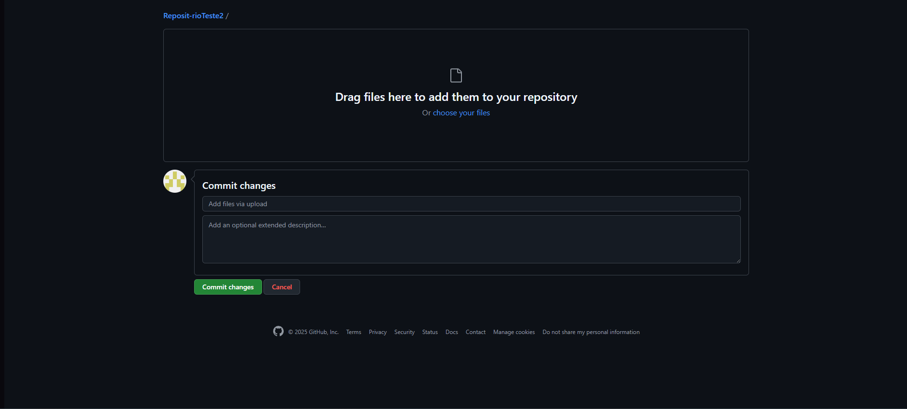
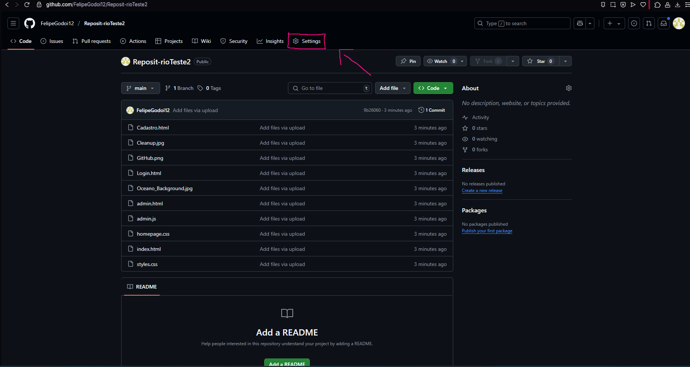
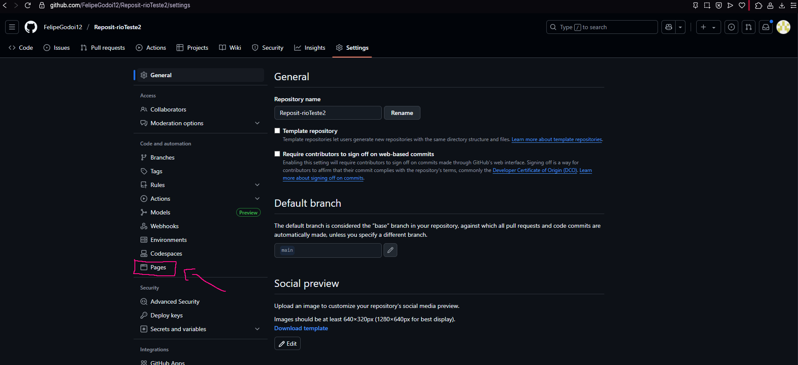
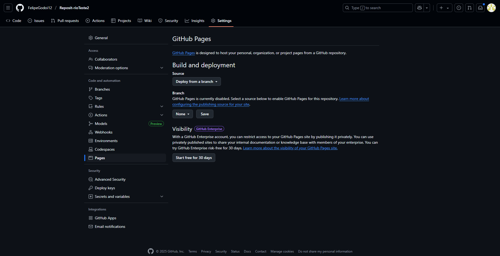
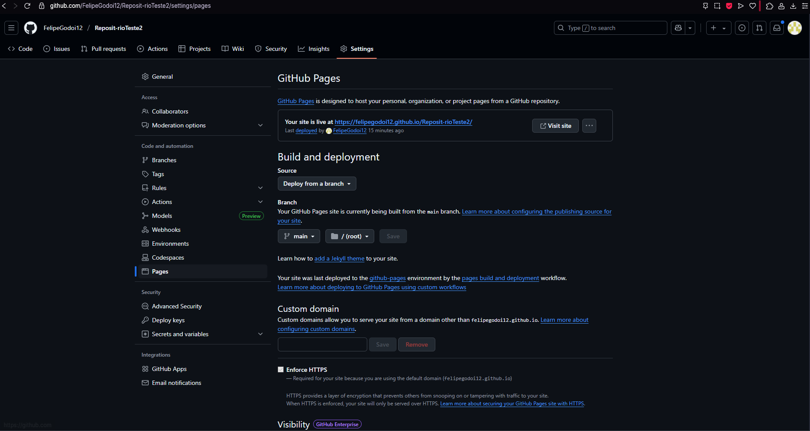

Como hospedar um projeto no Github Pages

O que é Github Pages?
GitHub Pages é um serviço gratuito oferecido pelo GitHub que permite hospedar sites estáticos diretamente a partir de um repositório. A partir dele você pode publicar páginas da web (como portfólios, documentações ou projetos pessoais) utilizando apenas HTML, CSS e JavaScript, sem precisar de servidores externos ou configurações complexas. Ele é especialmente útil para desenvolvedores que já utilizam o GitHub para versionamento de código, pois a integração é simples e automática. A principal utilidade do GitHub Pages é facilitar a publicação de projetos na web de forma rápida e acessível. O serviço gera uma URL personalizada, permitindo que qualquer pessoa acesse seu site online, sendo ideal para apresentação de trabalhos acadêmicos, projetos de programação ou criação de portfólios.
Postando seu primeiro projeto:
Antes de tudo, você vai precisar ter um repositório no Github para seu projeto. Caso queira saber como criar um repositório, leia o artigo sobre repositórios. Caso ja tenha um repositório, apenas faça o upload de seu projeto nele:
Agora, no canto superior esquerdo, vá em settings:
Em seguida, vá em pages:
Nas opções de Build and deployment, selecione deploy from a branch, e logo abaixo de Branch, selecione a opção main e a pasta onde seu arquivo principal se encontra. Clique em save para salvar as alterações e aguarde aguns minutos.
O github deve gerar um link para sua página, que pode ser compartilhado para qualquer pessoa acessar.
